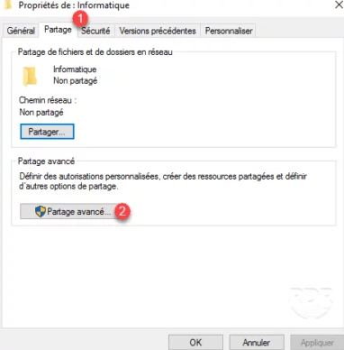

Para que serve o compartilhamento de pasta?
O compartilhamento de pastas se mostra muito útil em uma rede de computadores. Ao compartilhar uma pasta, permitimos que seu conteúdo seja acessado através da rede por todos os usuários. Ao compartilharmos uma pasta, todo o seu conteúdo, inclusive subpastas, serão compartilhados.
Como criar o compartilhamento de pasta:
1º Abra o Gerenciador de Arquivos.
2º Navegue até a pasta que deseja compartilhar.
3º Clique com o botão direito do mouse na pasta e selecione "Propriedades".
4º Vá para a guia Compartilhamento e clique em Compartilhamento Avançado.
5º Marque a caixa Compartilhar esta pasta e clique em Permissões.
6º Configure as permissões de compartilhamento conforme necessário e clique em Aplicar e OK.
7º Clique em Aplicar e em OK novamente para fechar a janela Compartilhamento avançado.
8º A pasta é compartilhada e o caminho visível nas propriedades.
9º Teste o compartilhamento diretamente do servidor, inserindo o endereço acima no Windows Explorer.